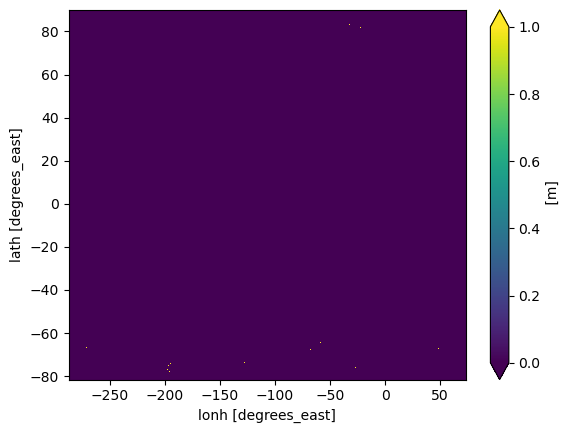
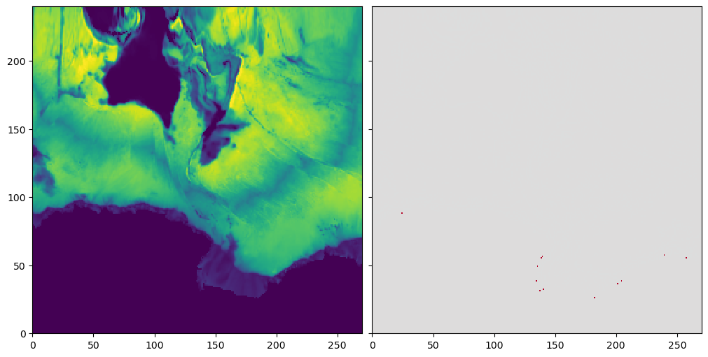
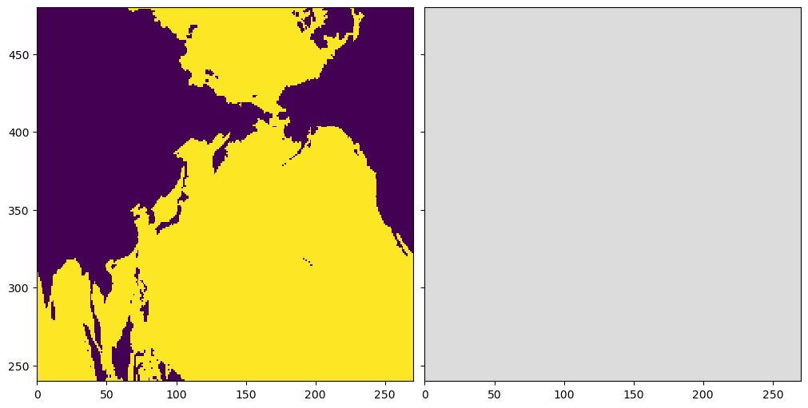

import os
import sys
sys.path.insert(0,os.path.abspath('../src/'))
%load_ext autoreload
%autoreload 2
%matplotlib inline
import numpy as np
import xarray as xr
import matplotlib.pyplot as plt
from topo_edit_util import map_mask, mom6_latlon2ij
path_old = '/glade/campaign/cesm/cesmdata/cseg/inputdata/ocn/mom/tx2_3v2/'
file_old = 'ocean_topo_tx2_3v2_240501.nc'
df_old = xr.open_dataset(path_old+file_old)
df_old
<xarray.Dataset> Size: 21MB
Dimensions: (lath: 480, lonh: 540, latq: 481, lonq: 541, nEdits: 25)
Coordinates:
* lath (lath) float64 4kB -81.56 -81.46 -81.36 ... 89.33 89.6 89.86
* lonh (lonh) float64 4kB -286.7 -286.0 -285.3 ... 71.33 72.0 72.67
* latq (latq) float64 4kB -81.61 -81.51 -81.41 ... 89.46 89.72 89.91
* lonq (lonq) float64 4kB -287.0 -286.3 -285.7 ... 71.67 72.33 73.0
Dimensions without coordinates: nEdits
Data variables: (12/19)
geolon (lath, lonh) float64 2MB ...
geolat (lath, lonh) float64 2MB ...
geolonb (latq, lonq) float64 2MB ...
geolatb (latq, lonq) float64 2MB ...
z (lath, lonh) float32 1MB ...
ocn_frac (lath, lonh) float32 1MB ...
... ...
orig_mask (lath, lonh) int32 1MB ...
D_interp (lath, lonh) float32 1MB ...
depth (lath, lonh) float32 1MB ...
iEdit (nEdits) int32 100B ...
jEdit (nEdits) int32 100B ...
zEdit (nEdits) float64 200B ...
Attributes:
Description: Ocean Topography Statistics on MOM6 Grid
Creator: Frank Bryan (bryan@ucar.edu)
Created: 20240216
Generating Code: create_model_topo.f90
Model Grid Version: tx2_3v2
Source Topography Data: /glade/campaign/cgd/oce/datasets/obs/SRTM/SRTM...
Edit History: Hand Edit + Lake Fill 02/16/2024
Manual edits updated on:: 2024-05-01T15:28:43.496410
By:: Gustavo Marques (gmarques@ucar.edu)
url: https://github.com/NCAR/tx2_3/topography/Appen...file_old = 'topo_edits_tx2_3v2_250107.nc'
df_old_topo_edit = xr.open_dataset(path_old+file_old)
df_old_topo_edit
<xarray.Dataset> Size: 5kB
Dimensions: (nEdits: 342)
Dimensions without coordinates: nEdits
Data variables:
iEdit (nEdits) int32 1kB ...
jEdit (nEdits) int32 1kB ...
ni int32 4B ...
nj int32 4B ...
zEdit (nEdits) float64 3kB ...
Attributes:
title: Topography Edits
original grid: ocean_topo_tx2_3v2_240501.nc
Edit History: Date Created 01/07/2025
history: Tue Jan 7 15:44:54 2025: ncks -6 topo_edits_tx2_3v2_2501...
NCO: netCDF Operators version 5.2.4 (Homepage = http://nco.sf....nvals = df_old_topo_edit.sizes['nEdits']
for n in range(nvals):
i = df_old_topo_edit['iEdit'][n].values
j = df_old_topo_edit['jEdit'][n].values
# print(i,j,df_old_topo_edit['zEdit'][n].values)
df_old['depth'][j,i] = df_old_topo_edit['zEdit'][n].values
path_new = '/glade/work/bryan/MOM6-data-files/Topography/tx2_3v3_Feb2026/'
file_new = 'topo.sub150.tx2_3v3.SRTM15_V2.4.edit2.SmL1.0_C1.0.nc'
df_new = xr.open_dataset(path_new+file_new)
df_new
<xarray.Dataset> Size: 21MB
Dimensions: (lath: 480, lonh: 540, latq: 481, lonq: 541, nEdits: 367)
Coordinates:
* lath (lath) float64 4kB -81.56 -81.46 -81.36 ... 89.33 89.6 89.86
* lonh (lonh) float64 4kB -286.7 -286.0 -285.3 ... 71.33 72.0 72.67
* latq (latq) float64 4kB -81.61 -81.51 -81.41 ... 89.46 89.72 89.91
* lonq (lonq) float64 4kB -287.0 -286.3 -285.7 ... 71.67 72.33 73.0
Dimensions without coordinates: nEdits
Data variables: (12/19)
geolon (lath, lonh) float64 2MB ...
geolat (lath, lonh) float64 2MB ...
geolonb (latq, lonq) float64 2MB ...
geolatb (latq, lonq) float64 2MB ...
z (lath, lonh) float32 1MB ...
ocn_frac (lath, lonh) float32 1MB ...
... ...
orig_mask (lath, lonh) int32 1MB ...
D_interp (lath, lonh) float32 1MB ...
D_edit2 (lath, lonh) float32 1MB ...
iEdit (nEdits) int32 1kB ...
jEdit (nEdits) int32 1kB ...
zEdit (nEdits) float64 3kB ...
Attributes:
Description: Ocean Topography Statistics on MOM6 Grid
Creator: Frank Bryan
Created: 20260226
Generating Code: create_model_topo.f90
Model Grid Version: tx2_3v3
Source Topography Data: /glade/work/bryan/Observations/Topography/SRTM/S...
Edit History: Hand Edit + Lake Fill 02/27/2026path_model = '/glade/derecho/scratch/gmarques/archive/b.e30_alpha07g.B1850C_LTso.ne30_t232_wgx3.304/ocn/hist/'
file_model = 'b.e30_alpha07g.B1850C_LTso.ne30_t232_wgx3.304.mom6.h.ocean_geometry.nc'
df_model = xr.open_dataset(path_model+file_model)
df_model
<xarray.Dataset> Size: 48MB
Dimensions: (latq: 480, lonq: 540, lath: 480, lonh: 540)
Coordinates:
* latq (latq) float64 4kB -81.51 -81.41 -81.31 ... 87.68 87.73 87.74
* lonq (lonq) float64 4kB -286.3 -285.7 -285.0 -284.3 ... 71.67 72.33 73.0
* lath (lath) float64 4kB -81.56 -81.46 -81.36 ... 87.65 87.71 87.74
* lonh (lonh) float64 4kB -286.7 -286.0 -285.3 -284.7 ... 71.33 72.0 72.67
Data variables: (12/23)
geolatb (latq, lonq) float64 2MB ...
geolonb (latq, lonq) float64 2MB ...
geolat (lath, lonh) float64 2MB ...
geolon (lath, lonh) float64 2MB ...
geolatu (lath, lonq) float64 2MB ...
geolonu (lath, lonq) float64 2MB ...
... ...
dyBu (latq, lonq) float64 2MB ...
Ah (lath, lonh) float64 2MB ...
Aq (latq, lonq) float64 2MB ...
dxCvo (latq, lonh) float64 2MB ...
dyCuo (lath, lonq) float64 2MB ...
wet (lath, lonh) float64 2MB ...
Attributes:
NumFilesInSet: 1MAX_DEPTH = 6000.
MIN_DEPTH = 9.5
depth_old_clipped = df_old['depth']
depth_old_clipped = xr.where(depth_old_clipped > MAX_DEPTH,MAX_DEPTH,depth_old_clipped)
#depth_old_clipped = xr.where(depth_old_clipped < MIN_DEPTH,MIN_DEPTH,depth_old_clipped)
diff = df_model['D'] - depth_old_clipped
print('Model depth min error = ',diff.min().values,' max error = ',diff.max().values)
Model depth min error = 0.0 max error = 0.0
diff = df_old['mask'] - df_new['mask']
x = diff.where(diff != 0,drop=True).stack(grid=('lath','lonh'))
print('# of mask values changed = ',x.count().values,' min change=',x.min().values,' max change=',x.max().values)
# of mask values changed = 30 min change= 1.0 max change= 1.0
diff = df_old['D_interp'] - df_new['D_interp']
x = diff.where(np.abs(diff) > 0.01,drop=True).stack(grid=('lath','lonh'))
print('# of uneditted depths changed by > 1 cm = ',x.count().values,' min change=',x.min().values,' max change=',x.max().values)
# of uneditted depths changed by > 1 cm = 30 min change= 10.16926097869873 max change= 888.458740234375
diff = df_old['depth'] - df_new['D_edit2']
x = diff.where(np.abs(diff) > 0.01,drop=True).stack(grid=('lath','lonh'))
print('# of depths changed by > 1 cm = ',x.count().values,' min change=',x.min().values,' max change=',x.max().values)
# of depths changed by > 1 cm = 30 min change= 10.16926097869873 max change= 888.458740234375
diff.plot(robust=True,vmin=0,vmax=1)
<matplotlib.collections.QuadMesh at 0x1513b77cda90>

fig,ax=plt.subplots(ncols=2,sharex=True,sharey=True,figsize=(10,5),constrained_layout=True)
ax[0].pcolormesh(df_old['depth'],cmap='viridis',vmin=0,vmax=6000)
ax[0].set_xlim(0,270)
ax[0].set_ylim(0,240)
ax[1].pcolormesh((df_old['depth'] - df_new['D_edit2']),vmin=-1,vmax=1,cmap='coolwarm')
<matplotlib.collections.QuadMesh at 0x1513b6096fd0>

fig,ax=plt.subplots(ncols=2,sharex=True,sharey=True,figsize=(10,5),constrained_layout=True)
ax[0].pcolormesh(df_new['mask'],cmap='viridis',vmin=0,vmax=1)
ax[0].set_xlim(0,270)
ax[0].set_ylim(240,480)
ax[1].pcolormesh((df_old['mask'] - df_new['mask']),vmin=-1,vmax=1,cmap='coolwarm')
<matplotlib.collections.QuadMesh at 0x1513b5f47d90>

fig,ax=plt.subplots(ncols=2,sharex=True,sharey=True,figsize=(10,5),constrained_layout=True)
ax[0].pcolormesh(df_new['mask'],cmap='viridis',vmin=0,vmax=1)
ax[0].set_xlim(270,540)
ax[0].set_ylim(0,240)
ax[1].pcolormesh((df_old['mask'] - df_new['mask']),vmin=-1,vmax=1,cmap='coolwarm')
fig,ax=plt.subplots(ncols=2,sharex=True,sharey=True,figsize=(10,5),constrained_layout=True)
ax[0].pcolormesh(df_new['mask'],cmap='viridis',vmin=0,vmax=1)
ax[0].set_xlim(270,540)
ax[0].set_ylim(240,480)
ax[1].pcolormesh((df_old['mask'] - df_new['mask']),vmin=-1,vmax=1,cmap='coolwarm')
fig,ax=plt.subplots(ncols=2,sharex=True,sharey=True,figsize=(10,5),constrained_layout=True)
ax[0].pcolormesh(df_new['mask'],cmap='viridis',vmin=0,vmax=1)
ax[0].set_xlim(0,279)
ax[0].set_ylim(240,480)
ax[1].pcolormesh((df_old['mask'] - df_new['mask']),vmin=-1,vmax=1,cmap='coolwarm')
fig,ax=plt.subplots(ncols=2,sharex=True,sharey=True,figsize=(10,5),constrained_layout=True)
ax[0].pcolormesh(df_old['D_mean'],cmap='viridis')
ax[1].pcolormesh((df_old['D_mean'] - df_new['D_mean']),cmap='coolwarm',vmin=-1,vmax=1)
print(np.max(np.abs((df_old['D_mean'] - df_new['D_mean']).values)))
fig,ax=plt.subplots(ncols=2,sharex=True,sharey=True,figsize=(10,5),constrained_layout=True)
ax[0].pcolormesh(df_old['D_interp'],cmap='viridis')
ax[1].pcolormesh((df_old['D_interp'] - df_new['D_interp']),cmap='coolwarm',vmin=-1,vmax=1)
print(np.max(np.abs((df_old['D_interp'] - df_new['D_interp']).values)))